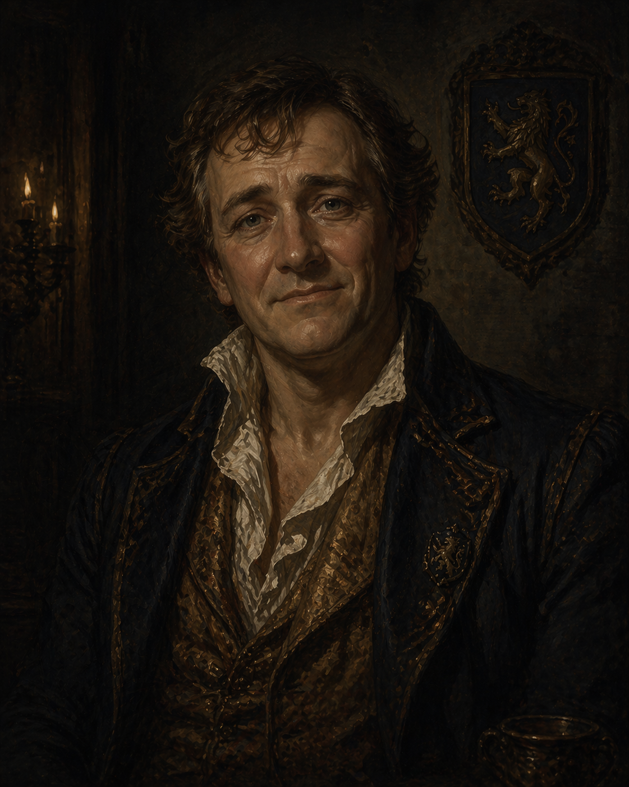

Jared
Brother of Alaric's father. Well-meaning but gullible.
Who He Is
- Noble � member of House Dalmorrian; brother of Alaric's father and his uncle
- Gullible and emotionally sympathetic � not malicious, just weak
- Prone to scams and cult manipulation; has been taken advantage of before
- Genuinely wants to do right by people — the problem is his judgment
Recent Developments
Jared has been attending a scholarly society called the Meridian Circle with interests in old bloodlines and pre-Cataclysm noble history. Members wear robes, seem dusty, and are emphatic about hand gestures. He has been invited to more private inner meetings and is flattered in a way that does not invite further questions.
“They actually know what the Dalmorrian name is. Most people have no idea. These people treat it like it means something.”
The Meridian Circle gave Jared a collection of old Dalmorrian documents. When he touched them, they glowed. He described this as “very exciting” and a sign of the society’s deep historical knowledge. He has no frame for what this actually means — the glow is the compact bloodline responding to him.
Alaric came to the warehouse to warn Jared about the Circle. He identified the signs (robes, dust, hand gestures) and became desperate. When Jared dismissed it as Alaric overreacting, Alaric grabbed him by the shoulders, swore, and was intensely passionate — very out of character. Jared was briefly startled, then laughed it off.
“Eeeeyyyyyy you almost got me! You can be really scary when you want to be, Alaric. You have learned some tricks hanging out with your ‘criminal’ friends, haha.”
He agreed to meet some of Alaric’s friends — loosely, not as a commitment. He still intends to see the Circle again.
Alaric brought Jared to meet Harrow in 6 Towers, walking through the Docks, Brightstone, and Charterhall. Jared treated it like a heist — ducking between lampposts, giggling, hiding, trying to bond with Charterhall students. Alaric was mortified. Then they entered 6 Towers, and Jared changed. He grew quieter. More aware. He had been in 6 Towers before.
Harrow stepped out of the shadows in his Spirit mask. Jared tried to step back; Alaric pushed him forward. Jared immediately recognized Harrow from a recent play performance and told him he was fantastic — Harrow briefly broke character before Alaric snapped him back. Jared used the whole encounter to endear himself to the crew beyond what anyone planned. Brick stepped out of shadows to catch Jared when he briefly bolted. Jared marvelled at Brick’s size: “Is your name… Slab?”
At one point Jared turned the situation back on Alaric — “Wait, you saw a demon? What are YOU into right now? Maybe you should stop whatever you’re doing.” — and the crew briefly sided with Jared. Alaric: “THIS IS NOT ABOUT ME RIGHT NOW.”
Harrow then placed his hand on Jared and shared a direct vision of Setarra. Jared convulsed, shook, vomited, and fell unconscious. Alaric cradled him until he came back. When he did, Jared was shaken and somber. He told Alaric he needed to think. When Alaric pushed further, Jared told him he was overstepping — warmly but firmly. “I am your senior. I can make my own decisions. Doesn’t matter how many mistakes I make, I always turn out okay!” (finger guns). Then: “I am seriously reconsidering my relationship with these people. You have given me a lot to think about.” They hugged. Alaric walked him home.
Flint was present the whole time — he had worked the warehouse that day and walked with the group to 6 Towers. He found Jared genuinely charming, but felt he looked very familiar in a way he couldn’t explain. He asked if he’d seen him in the newspaper. Jared: “Haha, Alaric’s father works really hard to keep me out of the paper, so I doubt that.”
Why He Matters
Jared's bloodline holds one of the three intact harbor compact seals. Setarra needs a living noble signatory to perform the ritual transfer. Jared is her primary target � exactly the kind of man who could be flattered, deceived, or desperate enough to sign something he doesn't understand.
Jared has a son named Harker who appears to run the family warehouse — doing the actual work of the Dalmorrian holdings while Jared attends his new club. Harker was visibly unhappy to see Alaric during the Session 7 visit. He attempted to turn Alaric away before being called off to handle warehouse business. Alaric does not know the reason for the hostility. Harker is a viable fallback target for Setarra if Jared becomes unavailable, and his independent resentments make him a potential complication on his own terms.
See Harker.
Jared was responsible for the industrial accident that killed Flint's parents � through negligence, not malice. When this comes out, it will put Alaric directly between his crewmate and his family.
Active Clocks
Setarra’s timeline for binding Jared to the ritual. Started at 2 (he was already attending initial gatherings). The crew’s intervention slowed momentum but did not stop the clock. He still intends to attend the Circle again.
Alaric’s Command roll (1): 1 segment — Jared laughed it off. Harrow’s Attune vision of Setarra (rolled 5): 2 segments — Jared convulsed, vomited, fell unconscious. Total: 3/4. One more successful push fills it. Jared is shaken and seriously reconsidering; he has not committed to stopping.
Compact Connection
Jared is House Dalmorrian � same bloodline as Alaric, same house, same seal. The Ledger responded to Alaric on the ghost train because their shared lineage is wired into the compact's ritual system. One seal covers both of them. Setarra doesn't need both � one living signatory will do. Jared is the easier target: willing to be flattered, prone to being deceived, and unlikely to understand what he's agreeing to.